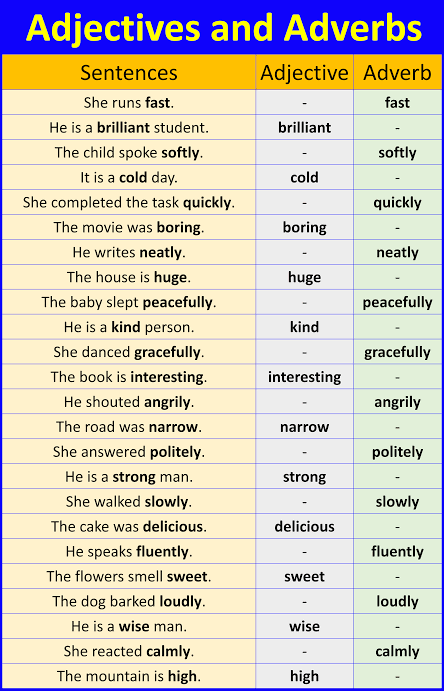

คำคุณศัพท์และคำกริยาวิเศษณ์ (Adjectives and Adverbs)
อธิบายคำคุณศัพท์ที่ใช้ขยายคำนามหรือคำสรรพนาม เช่น beautiful, tall และ interesting รวมถึงคำกริยาวิเศษณ์ที่ใช้ขยายคำกริยา คำคุณศัพท์ หรือคำกริยาวิเศษณ์ด้วยกันเอง เช่น quickly, slowly และ very